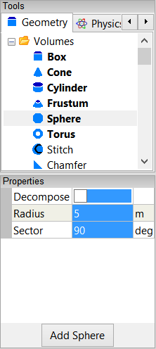
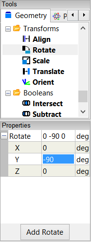
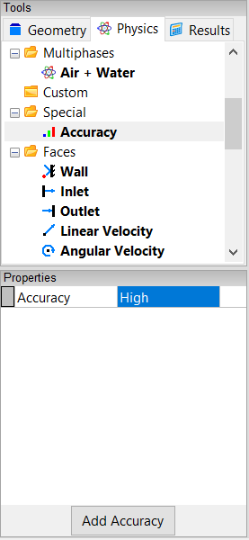

Fluid Flow Around a Sphere
Create a sphere, specify the physical conditions for your simulation, view the pressure coefficient contours on the sphere, and generate an XY plot.
Goals
In this tutorial, you will learn how to:
- Create a quadrant of a sphere and use symmetry planes to generate results for a full sphere
- Rotate geometry around an axis
- Specify physical conditions for a simulation, including the velocity of air flowing around the sphere and the properties of the outer surface of the sphere
- Specify meshing parameters
- Generate a color map (contours)
- Create an XY plot
- Save your simulation to a file
Assumptions
- You have activated the Caedium Builder and Caedium Panel Flow add-ons, or Caedium Professional.
- You are familiar with Caedium essentials.
Create a Sphere Quadrant
Select the Geometry Tool Palette.
Select the Volumes->Sphere tool. Turn off the Decompose property in the Properties Panel, enter a Radius of 5, and enter a Sector of 90. Press Enter on the keyboard to apply the changes to the Properties Panel.
The Decompose option instructs Caedium to split the sphere into six four-edged faces. This option is useful in simplifying the meshing process.

Click Add Sphere and select Done to create a sphere quadrant in the View Window.
Rotate the Quadrant Around the Y-Axis
It is customary to specify the flow direction in the X-direction. In this step you will rotate the sphere quadrant so that its straight edge is aligned parallel to the X-axis. To do this, you need to rotate the sphere quadrant about the center of its straight edge. This requires that you create axes at the center of that edge, which also coincides with the origin in this case.
Drag and drop the Others->Axes tool onto the background of the View Window. Double-click sim in the Select dialog and select Done to create axes (axes).
Axes are created at the origin by default. In this case, the origin is at the center of the straight edge of the sphere quadrant.
To rotate the sphere quadrant around the Y-axis, select the Transforms->Rotate tool. In the Properties Panel set Y to -90 and press Enter on the keyboard to apply the changes.

A positive rotation indicates a clockwise rotation around a positive coordinate direction. Conversely, a negative rotation indicates a counterclockwise rotation around a positive coordinate direction. This convention is commonly referred to as the right-hand rule.
Drag and drop the Rotate tool directly onto the axes you created in the View Window. Select Set Axes to rotate the sphere quadrant around those axes. Right-click on an edge of the sphere quadrant (which in this case will select the quadrant volume) and select Done to rotate the quadrant around the Y-axis.
Specify the Fluid Conditions
Select the Physics Tool Palette.
Select Gases->Air. The Properties Panel will show the default properties for air. To enable incompressible, irrotational, inviscid flow, set the 6 properties under State (Compressible, Heat Transfer, Rotational, Species, Transient, and Viscous) to No (if they are not set to No already).
Drag and drop the Air tool onto the background of the View Window, which represents the simulation (sim). Double-click sim in the Select dialog and select Done to set air as the fluid surrounding the sphere.
Select the Simulation->Linear Velocity tool. In the Properties Panel set the Velocity to [1 0 0].
Drag and drop the Linear Velocity tool onto the background of the View Window. Double-click sim in the Select dialog and select Done to set the velocity of the air at 1 m/s in the X-direction.
Define the Symmetry Planes for the Sphere
Caedium will calculate results on the sphere quadrant. However, since a sphere is a symmetrical shape, you can use the symmetry planes tool to see results for a whole sphere. Using symmetry allows you to get results faster and using less computing resources.
Select the Simulation->Symmetry tool. Select Y+Z next to Planes in the Properties Panel.
Drag and drop the Symmetry tool onto the background of the View Window and select Done to set Y and Z as the symmetry planes.
To see the full sphere, select the View tab in the Properties Panel and turn on the Symmetry property.
In the Home Toolbar click the Fit-All button  to see the whole sphere in the View Window. Left-click-and-drag the mouse in the View Window to rotate the view so that the sphere is in the orientation shown below.
to see the whole sphere in the View Window. Left-click-and-drag the mouse in the View Window to rotate the view so that the sphere is in the orientation shown below.
To shade the sphere, right-click on one of its edges, select the outer face of the sphere in the Select dialog (both of the sphere's edges you see in the View Window will be highlighted), click OK, and select Properties. Turn off the Transparent property in the Properties Panel to shade the sphere.
Set the Properties of the Outer Surface of the Sphere
Drag and drop the Faces->Wall tool onto the outer face of the sphere. Select the outer face of the sphere in the Select dialog, click OK, and select Done to create a wall on the outer surface of the sphere.
A wall is a solid surface through which fluid cannot flow.
Specify Meshing Parameters
Select the Special->Accuracy tool. Select High for the Accuracy in the Properties Panel.

Drag and drop the Accuracy tool onto the outer face of the sphere. Select the outer face of the sphere in the Select dialog, click OK, and select Done to set the accuracy of the calculation you want on the sphere.
You can experiment with selecting the Low and Medium accuracies at the end of this tutorial to see the effect that these settings have on your results. To do this, right-click on the outer face of the sphere, select the outer face in the Select dialog, click OK and select Properties. Select the Face tab  in the Properties Panel and select a different Accuracy from the pulldown menu.
in the Properties Panel and select a different Accuracy from the pulldown menu.
Calculate the Pressure Coefficient on the Sphere
Select the Results Tool Palette.
Drag and drop the Scalar Fields->Cp tool onto the outer face of the sphere in the View Window. Select the outer face in the Select dialog, click OK, and select Color Map to create contours of pressure coefficient on the sphere.
The pressure coefficient is a dimensionless number that relates pressure changes to the surrounding field pressure.
To rotate the view, left-click-and-drag the mouse in the View Window.
Create an XY Plot of the Pressure Coefficient on the Sphere
To make the edge selection in the next step easier, right-click on the outer face of the sphere in the View Window, select the outer face in the Select dialog, click OK, and then select Properties from the menu. In the Properties Panel, turn on the Transparent property.
Drag and drop the Scalar Fields->Cp (pressure coefficient) tool onto the edge of the sphere highlighted in the diagram below.

Double-click the edge in the Select dialog and select XY Plot.
Note that the edges may have different names in your example, so use the diagram above as a guide for the edge to be selected.
Save the Simulation
In the Home Toolbar click the Save button . Select the location to save your simulation, specify a File name (e.g., flow-over-sphere) and select Caedium (*.sym) as the file type (if it is not already selected). Click Save to save the sym file.
Compare your Results with Theory
You can compare the results of your simulation with theoretical calculations of pressure coefficient on a sphere. See the Fluid Flow Around a Sphere: Theory Comparison tutorial for detailed instructions.
Feedback
Questions? Ideas? Problems?

Comments
Confused
i get still confuse to follow this tutorial
Be Specific
What specifically are you confused about?
For an overview of the simulation process try Overview: Geometry to Results.
Rotational cylinder
Can I use symscape to investigate flow and pressure coefficient contours for a rotational cylinder (Magnus Effect)?
Can it be used to investigate/simulate flow through a slot and downstream flow attachment to a solid wall attached to the slot at an angle?
Thank you
Magnus Effect
Yes you can use Caedium with our Professional add-on to simulate the Magnus Effect. In fact we performed such a simulation for a rotating sphere (see image below) in the article "Curve Ball Aerodynamics."
For a rotating cylinder:
Hopefully this enough to get you started, and then move on to the slot and wall geometry you mentioned.
Help
I follow the tutorial word for word and end up with a completely blue ball. I can not get it to display the pressure difference ?????
Crucial Sections
The crucial sections to get right are:
Maybe try reviewing them again and see if it makes a difference to your results.
Problems
I followed every procedure shown above.
I got a sphere with the color map divided into four parts.
How do I get the same result as the tutorial shows?
Irrotational Inviscid Properties
Ensure that you have set the Substance->State properties as follows:
Tutorial problem - color divided into four parts
I followed the tutorial but the sphere color is divided into four equal parts...
Any way to solve it?
Is there any steps skipped or assumed in the tutorial?
Thanks.
No Skipped Steps
This tutorial is complete, there are no skipped steps.
Check that you followed the section "Specify the Accuracy You Require for Your Results".
XY Plot of pressure gradient
I have tried this tutorial for fluid flow around a sphere but with different geometry. I have gotten everything up to the colour map. Since the geometry doesn't have a symmetrical shape as sphere, it has asymmetrical pressure gradient. So I want to draw multiple lines (including curves) on the surface to get XY plots for Cp. How do I do that?
Create edges
Incorporate the edges (curves) into your geometry.
Sphere
Why do I only get half a sphere And its blue
Try repeating the tutorial
Without any other information I would guess you made a mistake in the setup. There was a similar question in these comments so try reviewing it.
Fluid flow over a sphere
Hello, does the outer surface mean the 'face 1' and 'face 2' when you select the sphere? I can't select the 'faces' from the 'volume' menu, right?
Just the spherical quadrant
Outer surface means just the spherical quadrant.
I'm trying to get plots of Cp
I'm trying to get plots of Cp for different alpha values but can't find the way to input the value for it. Could you please help with it?
Also, does the linear velocity not effet the Cp distribution, or I dind't do the correct way to change the value and apply to it?
Thank you for any information in advance.
Cp and alpha
By alpha I presume you mean the angle of attack, e.g., for an airfoil. Given we are using symmetry in 2 planes (quadrant), you can not change the angle. If you had a full model then you could modify the velocity magnitude and alpha through the Cartesian velocity components in Conditions->Linear Velocity as described in this tutorial. For more on setting velocity and alpha for a RANS Flow simulation (using a Reference Velocity instead of the Linear Velocity condition) see the tutorial "Transonic Flow Over the NACA 0012 Airfoil."
The Cp distribution is independent of the velocity magnitude as we are dealing with inviscid flow.